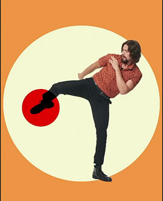
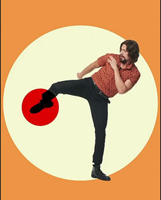

Welcome page
About this site
Gallery
Gallery

 

Luther, Allison and Diego Notice that the page is centered and it has a border around it. The photo also has a border around it. Replicate all of the padding and margins around the elements of the page.Notice that the page is centered and it has a border around it. The photo also has a border around it. Replicate all of the padding and margins around the elements of the page.Notice that the page is centered and it has a border around it. The photo also has a border around it. Replicate all of the padding and margins around the elements of the page.Notice that the page is centered and it has a border around it. The photo also has a border around it. Replicate all of the padding and margins around the elements of the page.The links in the following paragraphs should be red, bold, and without an underline in their "normal" (visted or unvisited) state. The links should turn blue with an underline when they are hovered over.